A 5.6 kg lander 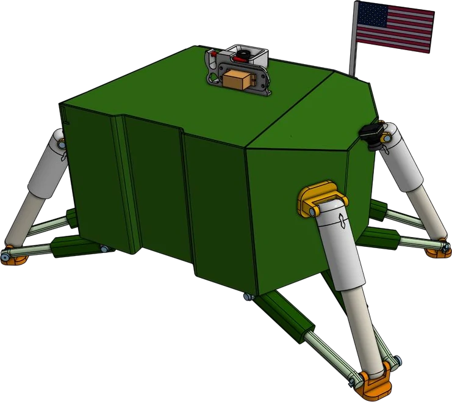 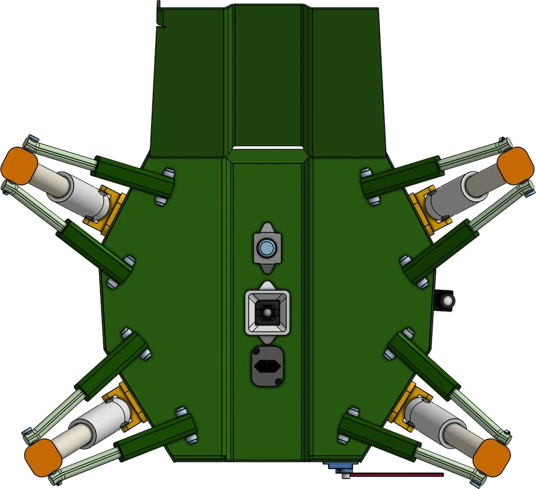 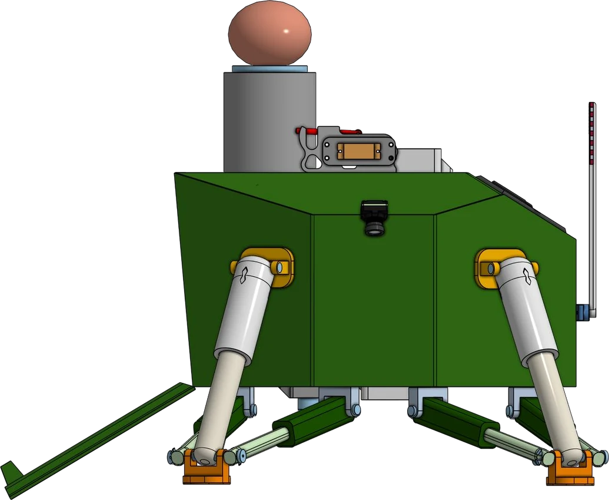
The short version
- Who
- Team DSLR: eleven students in UH Mānoa’s ME 481/482 senior design course, with Dr. Sorensen as instructor, Dr. Hudson as technical advisor and Kayla Crook as TA.
- What
- A mock Mars lander and rover that run the main steps of a soft landing: release, parachute descent, touchdown, rover egress, flag, imaging and telemetry.
- When
- Designed in Fall 2026. Built from January 2027, drop-tested from February, demonstrated in April 2027.
- Where
- Designed and built at UH Mānoa in Honolulu. Drops are planned at an airstrip in Kailua with UH’s CAMROCK team, with Kawainui Model Airplane Field as the backup.
- Why
- Landing is where Mars missions are lost. A small, low-cost demonstrator lets students practise the whole chain, from requirements to drop test, and leaves a reusable rig for the teams after us.
- How
- Folded aluminium, a spring-fired 1.83 m parachute, crushable legs, a Raspberry Pi 4 flight computer, and a ground station on its own radio and video links. A hexacopter does the lifting.
The mission
To design and develop a remotely operated lander and rover that carry out tasks and return data and images from the landing area, demonstrating the major systems and operations of a soft-landing Mars mission after release from a drone, by the end of Spring 2027.
- Demonstrate the key phases of a Mars landing and surface mission, at reduced scale.
- Descend and land upright, at no more than 8 m/s.
- Get the rover out of the lander after touchdown.
- Raise the American flag automatically after landing.
- Capture, store and send imagery throughout the mission.
- Keep commands and telemetry flowing both ways, reliably.
- Stream live video on a link independent of commands.
- Log lander status and instrument data for live monitoring and later analysis.
The drop, scrolled
-
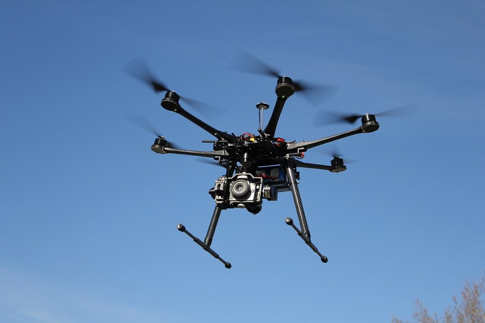
A DJI S800 hexacopter in flight. Alexander Glinz, CC BY-SA 3.0 AT. 40 m
Release
A servo on the lander’s roof pulls a pin and the drone’s tether lets go. Telemetry runs at 10 Hz: acceleration, pressure, temperature, and CO₂ once a second.
-
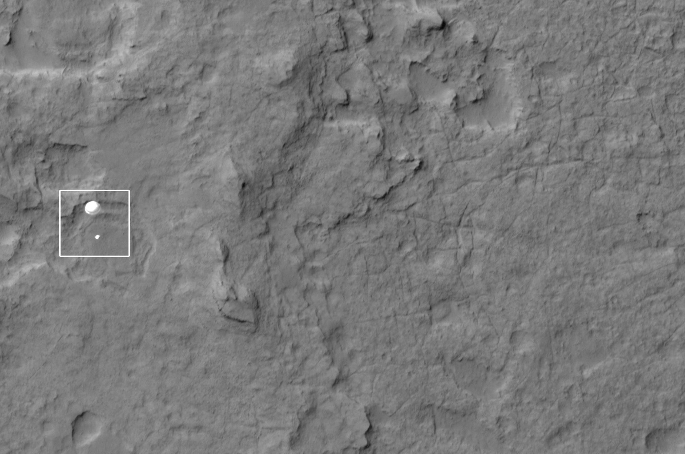
Curiosity under its parachute, seen from orbit in 2012. NASA/JPL/University of Arizona. 38 m
Chute out
A servo opens the canister hatch and a spring throws out the 1.83 m parachute. Ours opens a few metres below the drone, not eleven kilometres up.
-
30 m
Legs down
Two seconds after release a solenoid lock lets go and spring-loaded struts swing the four tripod legs out into a wide stance.
-
Perseverance's own descent camera, Jezero Crater, 2021. NASA/JPL-Caltech. 15 m
Live video
A RunCam streams the fall to the ground on analog 5.8 GHz. Commands and telemetry ride XBee radios at 900 MHz on separate hardware, so one can fail without the other.
-

2 m
Cut away
When the barometer, ultrasonic and time-of-flight sensors agree the ground is 2 to 3 metres away, a solenoid pin drops the parachute, so it can’t drape over the lander or drag it sideways.
-
0 m
Touchdown
Upright, on its legs, under 8 m/s. Honeycomb inside each central strut crushes to soak up as much as 192 J, then a spring levels the body.
-
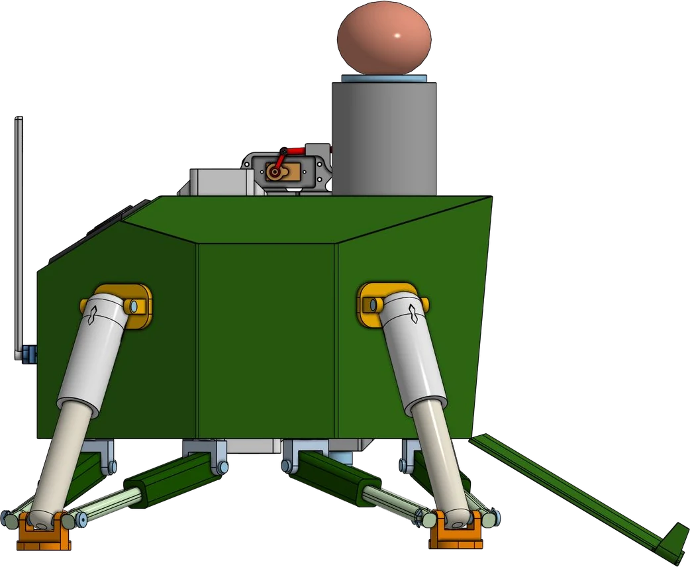
T+10:00
Ramp down
On the GO TO DEPLOY command, or on its own after ten minutes, a solenoid retracts and a torsion spring swings the ramp to the ground.
-
T+11:00
Rover out
A Raspberry Pi 4 rover with 360° LiDAR drives down, circles the lander at least a metre out and shoots a 360° panorama of the site.
-
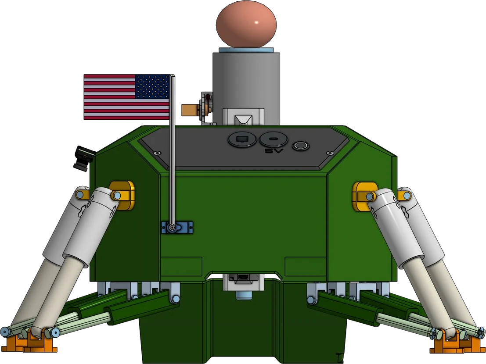
T+12:00
Flag up
Two minutes after the rover leaves, a servo swings the printed flag to vertical. A minute later the rover photographs the lander. Mission complete.
Size the parachute yourself
The catch is the last two metres. Once the parachute drops away the lander free-falls, and 2 m of free fall alone ends at 6.3 m/s. So the canopy has to slow us to about 4 m/s before it lets go. These are the numbers from our design review, running live.
- 3.9 m/s under the canopy
- 154 J for the legs to absorb
- 2.63 m² of canopy
V under canopy = √(2mg / ρ·Cd·A), then V at touchdown = √(V² + 2gh) from the cut-away height. Air density 1.225 kg/m³ at sea level. A first-order estimate: no swing, no wind, no opening shock, and the body’s own 1.3 N of drag left out.
Show the working
Our Preliminary Design Review runs to 175 pages. Here are four results from it that shape the build.
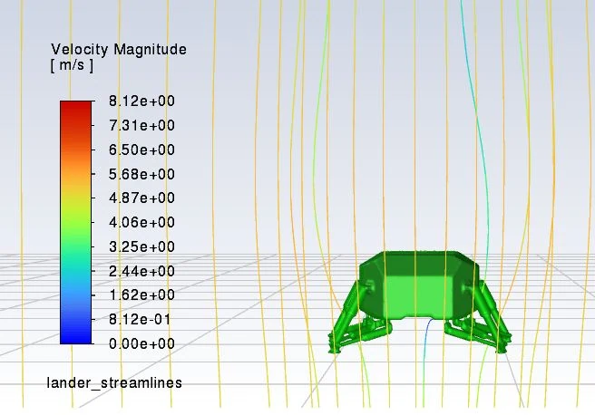
1.3 N
of drag from the lander body at 5 m/s, from an ANSYS Fluent run (SST k–ω). The parachute adds about 86 N, comfortably more than the lander’s 59 N weight.
192 J
for the legs to absorb at 8 m/s with a full 6 kg. Stopping in 1 to 5 cm, that is a 3.9 to 19.2 kN hit, which is why the honeycomb matters.
2 h
of lander runtime from two 21700 cells: 12.8 W on average, 20.7 W at peak.
5,633 g
estimated mass, built up from CAD and datasheets.
Bars are shares of the 6 kg limit. Add 15% growth on the deployables, comms and avionics and the total reaches 6,062 g, 62 g over, so we’re lightening the panels.
The machine
The shell 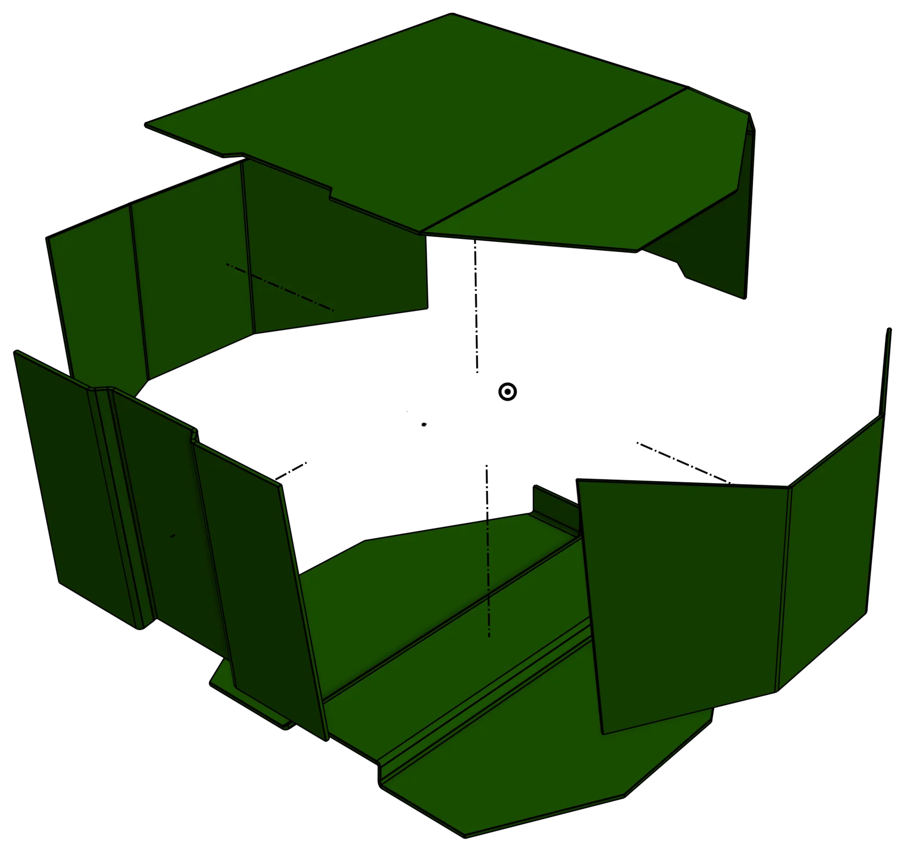
Lander
Riveted 5052 aluminium panels around a printed electronics module: a Raspberry Pi 4, a Pico 2 sensor hub and three AR0230 cameras that can look straight at the sun.
Caleb Borengasser, Owen Bramley
Deployables
A spring-fired parachute dropped by a solenoid pin, four tripod legs on crushable honeycomb, a torsion-spring ramp, a servo flag and a servo release from the drone.
Leanelyn Tolentino, Ethan Santiago, Julien Wooten, Max Sibayan, Peter Simeon
Rover
A Waveshare RaspRover: four driven 80 mm wheels, a Raspberry Pi 4 and ESP32 on ROS 2, a 360° LiDAR and a forward camera. An electromagnet holds it for the fall.
Zachary Gregorio, Gabriel Figueiredo
Ground
XBee-PRO 900HP radios for commands and 10 Hz telemetry, two analog 5.8 GHz links for lander and rover video, all run from one COSMOS laptop.
Kai Mitchell, with Team RoSE
Made by hand, here in Mānoa
Almost everything that isn’t a circuit board, we make ourselves: from sheet, from filament, from rivets. Manufacturing starts in January. Point at a step to see it.
-
Cut
Every panel of the shell starts flat, laid out on 2 mm 5052-H36 aluminium sheet.
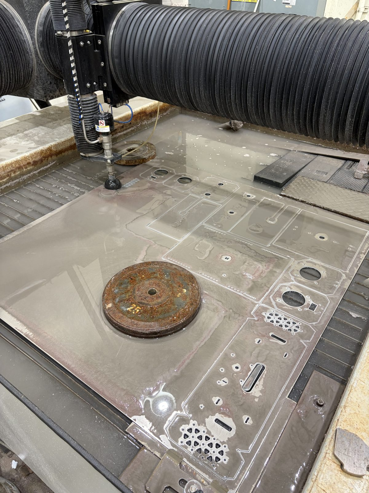
-
Fold
Bent on a brake into the chamfered box you see everywhere on this page. The ramp gets four pressed ribs to guide the wheels.
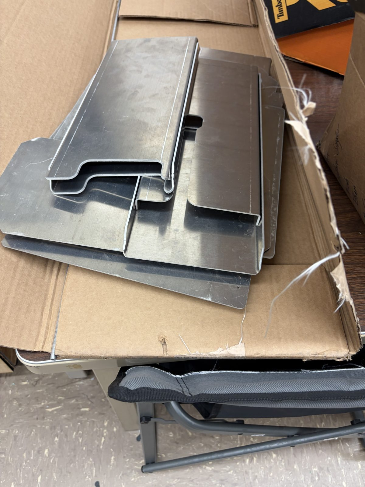
-
Rivet
Panels joined with blind rivets: light, strong, and fixable in a field.

-
Print
The electronics module, brackets, flag and parachute plate, printed. We’re also testing whether printed honeycomb can stand in for aluminium.
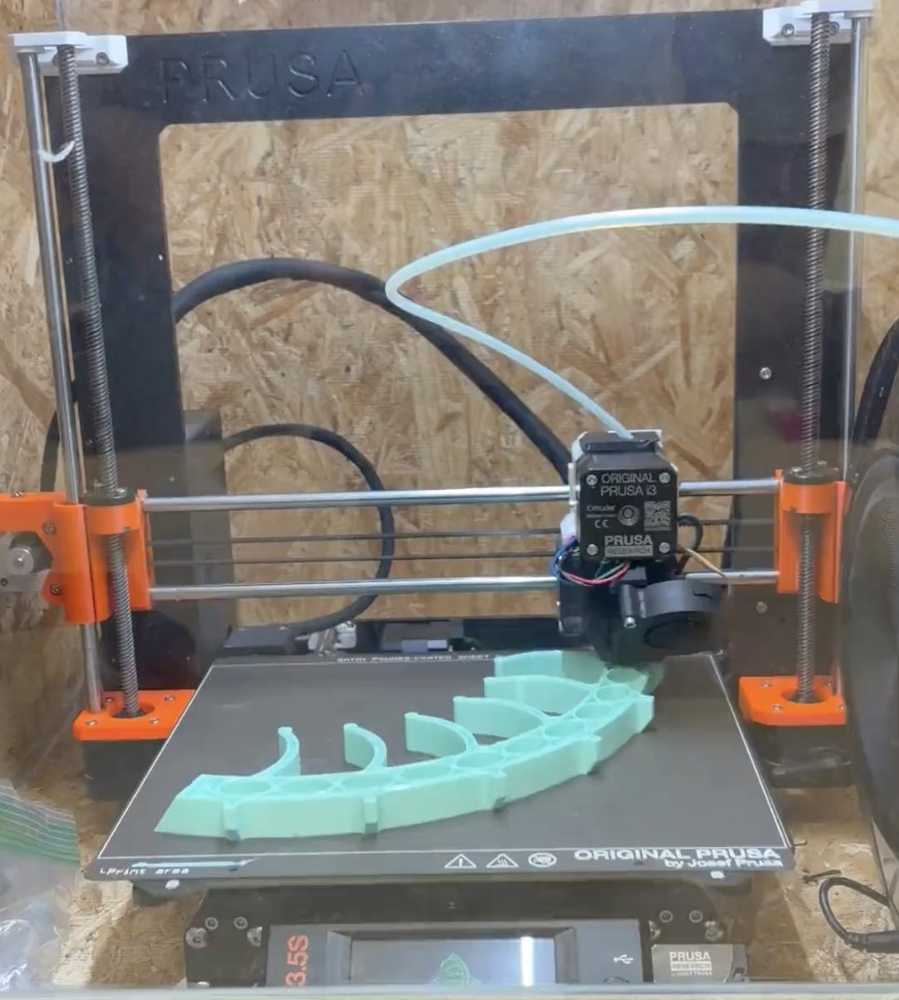
-
Wire
A Raspberry Pi 4, a Pico 2, three cameras and a battery pack in one printed module, with Ethernet and USB-C reachable from outside.

-
Drop
Then up under a hexacopter over Kailua, and down again, higher each time, until the numbers hold.
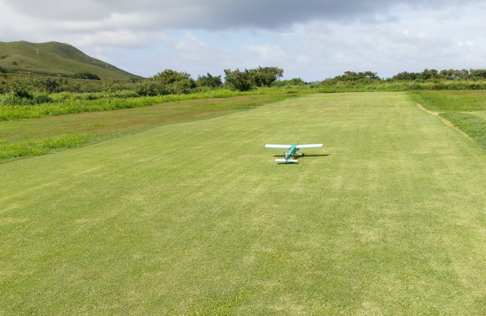
Where we stand
Updated 13 November 2026, after our Preliminary Design Review.
5.63 kg
Estimated mass against a 6 kg limit. 367 g to spare, and the budget we watch hardest.
$2,568
Planned spend with a 20% reserve: 86% of the $3,000 awarded.
CDR
Critical Design Review is next, in December. Then we order parts.
Performance
On track on paper. All eight objectives have a design that meets them; none has been tested yet, and mass is the tightest margin.
| Objective | Where the design stands | Status |
|---|---|---|
| Demonstrate a Mars landing, at small scale | All four subsystems through PDR; 5.63 kg against a 6 kg limit | On track, mass tight |
| Land upright at 8 m/s or less | About 4 m/s under canopy, 7.4 m/s after a 2 m cut-away; legs sized for 192 J | Meets it by analysis; drop tests from January |
| Get the rover out | Torsion-spring ramp, 16 cm long at 30°; electromagnet holds the rover | Designed |
| Raise the flag automatically | Printed flag on a servo, swings 90° | Designed |
| Capture and send imagery | Three AR0230 cameras on the lander; camera and LiDAR on the rover | Designed |
| Commands and telemetry both ways | XBee-PRO 900HP; 10 Hz needs about 4.6 kbit/s | Designed; range test open |
| Live video, independent of commands | Two analog 5.8 GHz links on separate hardware | Designed; licence check open |
| Log lander and instrument data | Pico 2 sensor hub: IMU, pressure, temperature, CO₂ at 1 Hz | Designed |
Time
On schedule for the April 2027 demonstration. Next milestone: the Critical Design Review in December. To watch: drone support from AEI isn’t confirmed yet, and the Holmes Hall shop is under renovation until December.
- Oct 2026Proposal done
- Nov 2026Preliminary Design Review done
- Dec 2026Critical Design Review, parts ordered 7–16 Dec next
- Jan 2027Manufacturing, low drops
- Feb 2027First drops from the drone
- Mar–Apr 2027Subsystem tests, software integration
- Apr 2027Final demonstration
Money
Under budget. Nothing is spent yet: orders go out 7–16 December. Planned spend is $2,568 including a 20% reserve, leaving $432 of the $3,000 unallocated.
- Lander$770
- Deployables$490
- Rover$480
- Ground$400
- 20% reserve$428
- Not yet allocated$432
- ME Department award
- $3,000, approved
- UROP project funding
- Up to $10,000, pending
- ASUH research award
- Up to $1,500, pending
Three tries at one box
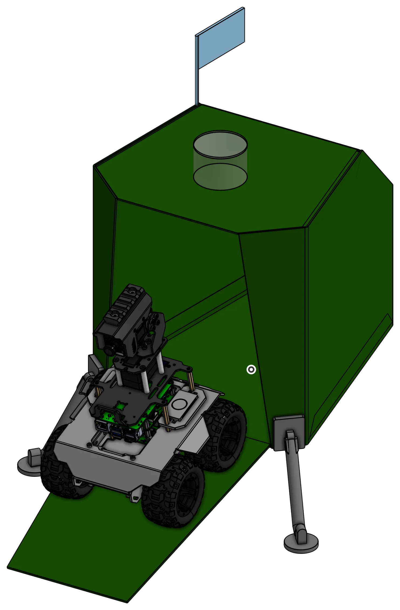
Sketched
September. A tall box on stick legs, the rover parked at the door.

Proposed
October. Wider and lower, gusseted legs, a camera mast and a flag.
Reviewed
November. Parachute canister on top, tripod legs, a spring ramp, every board placed.
Every angle
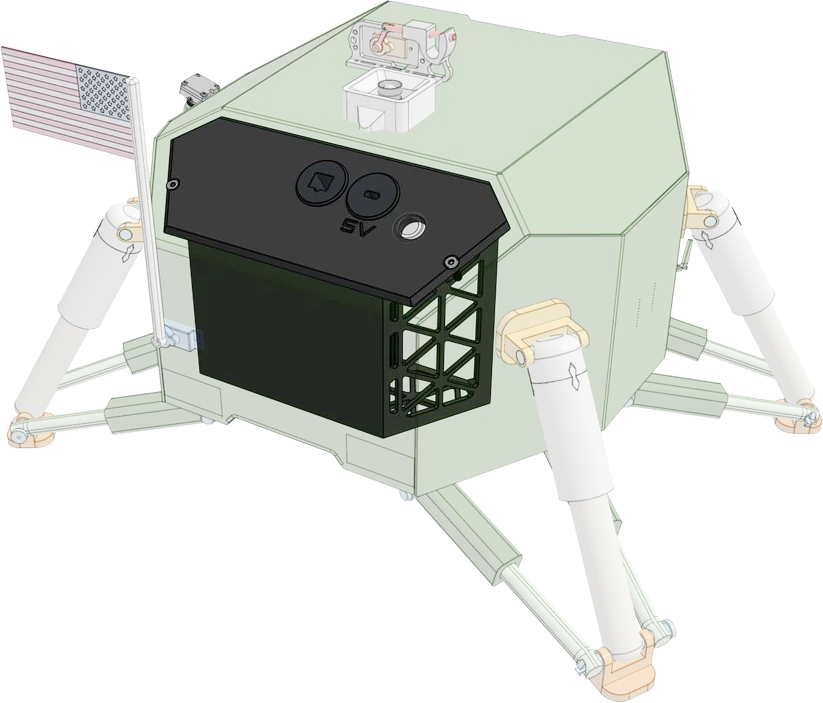
Eleven people, one box
 Owen BramleyProject manager, lander structure
Owen BramleyProject manager, lander structure Gabriel BansilSystems integrator
Gabriel BansilSystems integrator Kai MitchellFiscal officer, ground lead
Kai MitchellFiscal officer, ground lead Leanelyn TolentinoDeployables lead: release, ramp and flag
Leanelyn TolentinoDeployables lead: release, ramp and flag Caleb BorengasserLander lead, imaging and data
Caleb BorengasserLander lead, imaging and data- Zachary GregorioRover lead
- Ethan SantiagoDeployables, parachute
- Julien WootenDeployables, landing legs
Plus Gabriel Figueiredo on rover software, and Max Sibayan and Peter Simeon on deployables, all three from the Vertically Integrated Projects programme. Guided by Dr. Sorensen, our instructor and the reason for the name, Dr. Hudson, our technical advisor, and Kayla Crook, our TA.
Come watch it fall
Drops start in February 2027 in Kailua, with the final demonstration in April. Sponsors, students and the curious are all welcome. Ask us anything: Owen Bramley, project manager, ob3@hawaii.edu.
Ask for the drop date